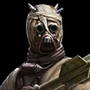

Deal Physical damage to target enemy with a 60% chance to stun for 1 turn.
Tusken allies gain 100% Turn Meter and Speed Up for 2 turns.

Tusken allies gain 55 Defense, and other allies gain half that amount.

URoRRuR'R'R gains Offense Up for 4 turns whenever an enemy is Stunned.